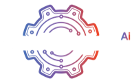

The foundation for building real software with AI.
No coding required.
Build with AI. Don't look like it.


A live website on a real URL by the end of class.
Your tools are already installed and logged in from the prereqs — today we connect them and build. Here's the machine we're driving:
Not set up yet? Open the prereqs deck (prereqs.html) and run through it first — VS Code + Claude Code, the tool installs and logins, your review agents, and your GitHub + Vercel accounts.
What this class is not.
- Not a coding class. You will never type code. You will type English.
- Not a design class. The AI handles the visual craft.
- Not "how does AI work." We're using it, not dissecting it.
- Not about custom domains, databases, or logins (yet).
Stop using a tool. Start delegating to a person.
- Type keywords and scroll the results.
- Point and click every step yourself.
- Ask "how do I do X?" and go do it.
- Learn the app before you can use it.
- Say in plain English what you want.
- Describe the goal — let Claude handle the steps.
- Say "do X for me" — and it does it.
- No app to learn. You already know how to talk.
It even works before you know exactly what you want. "I want to build a site for my pottery studio — can you help me figure out what it should have?" Claude takes the rough vision, asks a few questions, and brings it down to earth as something real to build.
Use Opus, and start fresh often.
Opus is the strongest model for building. Type /model and pick Opus, or use the picker at the bottom of the Claude panel. If your answers feel weak, check you're on Opus.
When you finish one thing and move to the next, click the ✳ starburst to open a new session. A clean slate gives sharper results — and uses less of your plan than a long, cluttered chat. (Avoid /clear — it wipes your history.)
Rule of thumb: one focused task per session. Locked the aesthetic? New session. Moving from layout to copy? New session. A short, on-topic conversation always beats a giant one.
The six words you need to know.
- Git = change tracking. Like Track Changes in Word, but for your whole project.
- Repo (repository) = your project's folder, tracked by git. Your website is one repo.
- Commit = save. A snapshot you can always roll back to.
- Push = send your saves up to GitHub. (This is what triggers a live deploy.)
- Pull = grab the latest version from GitHub down to your computer.
- Clone = make a fresh copy of a project from GitHub onto your computer.
We're skipping branching for now — it comes up once, at the very end.
Create your repo — and wire it to GitHub and Vercel.
The prereqs logged you into everything, but your project isn't connected to anything yet — without this step, Claude won't know where to push. Ask Claude in the VS Code terminal:
Verification checklist
git statusworks in the VS Code terminal- Your project shows up at github.com/yourname
- Your project shows up in Vercel with a *.vercel.app URL
Local = practice. Push = publish.
Local (your computer)
Every edit shows up the moment you save. Preview it in your browser anytime. Experiment, break things, undo, redo — nobody sees it.
Push (to GitHub)
The moment you push, Vercel rebuilds and the changes go live for the whole internet. Only push when you're ready.
This is the single most important concept of the day. Build locally. Push when proud.
Claude codes it. Impeccable makes it beautiful.
- Without Impeccable: generic AI-looking pages.
- With Impeccable: distinctive, polished, professional craft.
- You already installed this in the prereqs — it's ready to go. Nothing to do now.
- Restart VS Code if you haven't since setup, so the skill loads before you use it.
Skipped the prereqs, or not sure it's there? Paste this and Claude sorts it out:
Trouble installing? More options at impeccable.style/#downloads
The single most important slide of the day.
Run /impeccable init to start. In the same message, paste in as much context as you can — these are blank repos with zero info about your business.
Include in your first message
- What the business does, who it's for
- Who you are, your story, your why
- The vibe — luxe, playful, technical, calm, bold, etc.
- Sites you love (URLs)
- Brand colors and fonts if you have them
Logo tip: drop your logo file into the root of the project tree before running — it gets picked up automatically.
At the end of /impeccable init, it offers to run /impeccable document — say yes. It writes two files every command reads first: PRODUCT.md (who, what, why) and DESIGN.md (colors, type, components).
Review and iterate from the outside in.
After every /impeccable pass, fight the urge to fix small things first. Lock each layer before moving down — otherwise you'll polish a button that's about to get deleted anyway.
Once a layer feels done, click the ✳ starburst to open a new session. A clean slate gives better results and uses less of your plan.
You can use the iteration commands at every layer — /impeccable bolder, animate, delight, etc. all work whether you're fixing the whole-site aesthetic or just one section's layout. Full list on the next slide.
And: describe what's wrong — don't try to micro-direct the fix. "The CTA feels lost" beats "move the button 4px left."
The first pass is never right. That's the point.
The first build just gets your site on the screen — rough and plain is expected. Here's the loop that takes it from there:
- 1. Build it — get your sections up with
/impeccable shapeor/impeccable craft. Don't judge it yet; you just need something on the page to react to. - 2. Iterate, with direction — not just "make it bolder." Say what you like, what you don't, and what's missing. The more specific your feedback, the better the next pass.
- 3. Describe what's wrong — tell Claude what feels off or unclear and let it fix it. "The hero feels flat" beats "move the button 4px left."
- 4. Loop 2–3 until you genuinely feel good — then polish, right before you ship.
- 5. Read it out loud — check the copy actually sounds like you and reads clearly. A pretty page with wrong words still misses.
Most important — it's a living site. The real refinement starts once it's up: that's when you find what's working, what's noise, what's missing. You keep reshaping it as your business grows — it's never "done."
The commands you'll use at every layer of the funnel.
/impeccable + <command> + whatever you want to work on/impeccable shape— the main iteration command. Use this to keep shaping any section after the initial init. (craftjust builds;shapeasks you questions first.)/impeccable bolder·/impeccable overdrive— when the design feels safe, push it louder. Overdrive really pushes it, but can be heavy on performance — use carefully./impeccable animate— add motion and micro-interactions that bring the page to life./impeccable delight— add small surprising details that make people screenshot and share.
Inverse if needed: ask for "quieter" or "calmer" if it goes too far.
→ Full command reference (impeccable.style/docs)
The loop: review (previous slide) → run an iteration command → review again → repeat until you love it.
Things will break. That's normal.
- Page blank? Ask Claude: "the page is blank, what's wrong?"
- Want to preview your site locally? Ask Claude: "launch a local server and open it in my web browser" — that last part matters, so it opens full-size in Chrome/Safari instead of a cramped panel inside VS Code.
- Preview won't update? Refresh the browser, then ask Claude to restart the server.
- Something broke and you want to undo? Ask Claude: "revert to the last commit."
When in doubt, describe what you see and what you expected. Claude will figure it out.
When stuck, paste one of these.
PREVIEW Preview won't load:
DEPLOY Vercel build failed:
UNDO I broke something:
STALE Claude keeps giving you outdated instructions or APIs that don't exist anymore:
Once layout + aesthetic are locked, here's the order.
→ Full Impeccable docs (impeccable.style/docs)
- 1. Craft the layout and visual feel with
/craft— use this for the initial site and for any new page you add later. - 2. Push further with
/bolder,/overdrive,/animate,/delightuntil you love it. - 3. Copy last — talk Claude through the copy directly (no special command). Don't waste good copy on a layout you're going to throw away.
- 4. Optimize + harden —
/impeccable optimizefor accessibility, performance, and code quality, then/impeccable hardento make it hold up to real-world use: long text, other languages, broken images, empty states, and slow or failed loads. - 5. Audit + critique —
/auditfor implementation quality, then/critiquefor design quality (optional if you're happy). Only after passing do you move to polish. - 6. Polish — always last, right before launch.
The pages almost every website needs.
Standard pages
- Home
- About — your story, your why
- Services / Products / What you do
- Contact — form or email
- FAQ
- Testimonials / Social proof
- Privacy Policy + Terms
Specialized — depends on your business
- Restaurant → Menu, Reservations, Hours
- Photographer → Portfolio, Pricing, Booking
- Consultant → Case Studies, Process, Book a Call
- Coach → Programs, Free Resources, Schedule
- SaaS → Features, Pricing, Docs, Changelog
- Local service → Service Area, Before/After, Reviews
Look at what competitors have. Their nav bar is your starting page list.
- Pick 3–5 competitors or businesses you admire in your space.
- Look at their navigation bars — those are the pages that work.
- Ask Claude:
Then for each page, the prompt is just:
Two things to do once your site is good enough to share.
Get a real domain.
yoursite.com instead of yoursite.vercel.app. ~$12/year.
Buy it inside Vercel: Project → Settings → Domains → "Buy a domain." Vercel handles the DNS setup automatically.
Already own a domain elsewhere? Go to Domains → "Add existing" and Vercel walks you through connecting it.
Set up a backup branch.
So you can save work-in-progress to GitHub without it going live.
Right now every push deploys. That was fine while you were building — nobody was looking. Once your site is live and shared, you need a way to back up changes without publishing them.
What's a branch? Think of it as a parallel copy of your project. Vercel only watches the main branch — push to main, it deploys. Push to any other branch, it just sits safely on GitHub. A backup branch is your "saved but not published" lane.
You don't need to memorize git commands — Claude does all the branch switching. Just say:
The next class, if you want it.
- 1. How to Build a Website. ← You just did this. The website you built today, start to finish.
- 2. How to Build a Dashboard. Turn real data into a dashboard built the way you make decisions.
- 3. SEO + GEO. Get found on search engines and AI answer engines (ChatGPT, Perplexity, Claude).
- 4. Automations. Make routine work happen without you, scheduled and triggered.
- 5. Agents. Build software that acts on its own, like a lean team that never sleeps.
- 6. Go-To-Market. Take what you built and sell it, powered by StratEngine.
Now go build something.

StratEngineAIA website is step one. The business is the hard part.
I built StratEngine for exactly that: a tool that thinks through strategy and growth with you, the way a co-founder would.